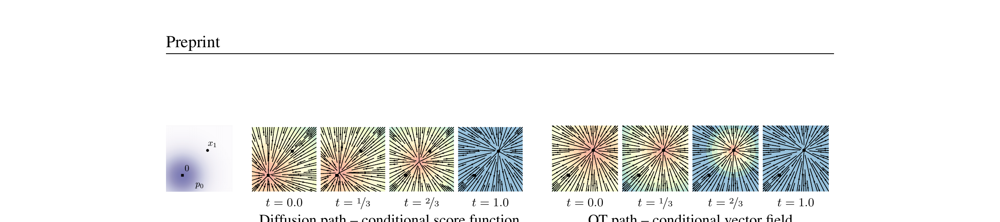
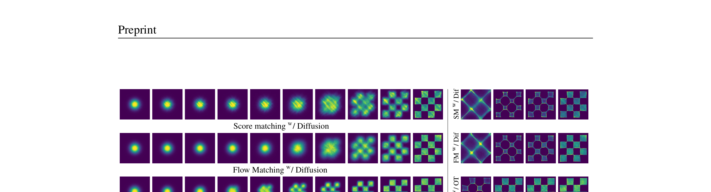
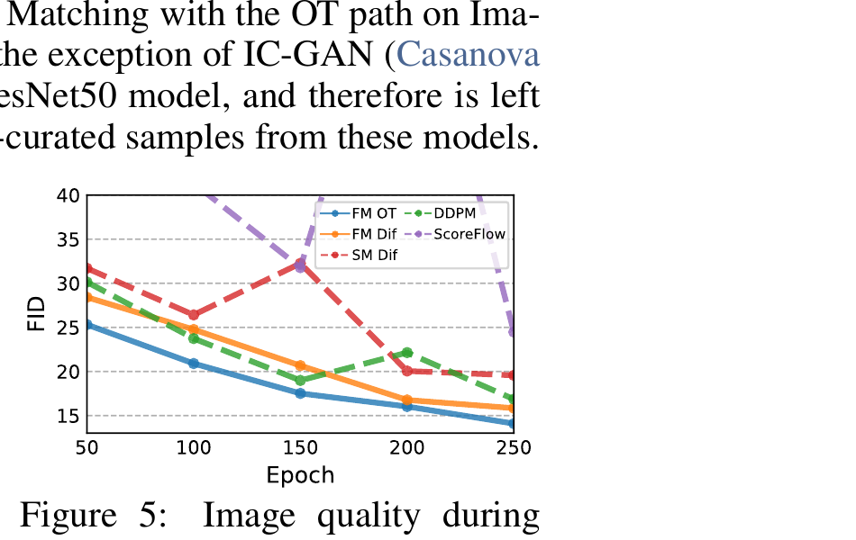

Flow Matching for Generative Modeling
Yaron Lipman, Ricky T. Q. Chen, Heli Ben-Hamu, Maximilian Nickel, Matt Le · Meta AI (FAIR) + Weizmann · arXiv 2210.02747 · 2023
你已经在 π₀ 里见过 flow matching loss 了——那一行代码
||v_θ(x_t, t) - (x_1 - x_0)||²。
这篇论文就是推导出那行代码的原始论文。读完你会明白三件事：
(1) 为什么 flow matching 比 diffusion（DDPM）更简洁——ODE 替代 SDE，直线替代曲线
(2) "Conditional" FM 这一步怎么把不可计算的目标变成可训练的 loss
(3) 为什么 π₀ 选 OT 路径而不是 diffusion 路径——更快收敛、更少采样步
§1 一句话 + 你已经知道的
Flow Matching 是一种无需模拟 ODE的 CNF 训练方法： 通过回归条件速度场（conditional vector field）， 让神经网络学会把噪声沿着"流"（flow）变换成数据。 配合 Optimal Transport 路径（直线插值）， 训练更稳定、采样更快、效果全面优于 DDPM / Score Matching。
展开原文 · Abstract
"We introduce a new paradigm for generative modeling built on Continuous Normalizing Flows (CNFs)... We present the notion of Flow Matching (FM), a simulation-free approach for training CNFs based on regressing vector fields of fixed conditional probability paths."
π₀ 的 Action Expert 用 flow matching 训练：从噪声 $\mathbf{x}_0 \sim \mathcal{N}(0,I)$ 出发， 学一个速度场 $v_\theta(\mathbf{x}_t, t)$，沿着 ODE 走到真实动作 $\mathbf{x}_1$。 训练 loss 就是本文的 Eq 23（OT-CFM loss）。 这篇论文告诉你这个 loss 为什么对、怎么推出来的、比 diffusion 好在哪。
§2 前置：CNF 是什么
Flow Matching 是 CNF（Continuous Normalizing Flow）的一种训练方法。 在讲 FM 之前，先搞清楚 CNF 在做什么——用一个随时间变化的速度场， 把简单分布（高斯噪声）"推"成复杂分布（数据）。 如果你了解 ResNet 残差块，CNF 就是"连续版残差网络"。
2.1 ODE 定义 flow
一个随时间变化的速度场 $v_t : \mathbb{R}^d \to \mathbb{R}^d$ 定义了一个 flow（流映射）$\phi_t$：
- $\phi_t(x)$
- Flow 映射：把初始点 $x$ 在时间 $t$ 时"搬运"到的位置。类比水流中的一个粒子——$t=0$ 时在 $x$，$t=1$ 时到了 $\phi_1(x)$
- $v_t(\cdot)$
- 速度场：在任意位置 $\phi_t(x)$，告诉粒子"现在往哪个方向走、走多快"。这就是神经网络要学的东西
- $\phi_0(x) = x$
- 初始条件：$t=0$ 时粒子还在原位
想象一条河。$v_t$ 是河流在每个位置每个时刻的水流速度。 你扔一个乒乓球进去（$\phi_0(x) = x$），它随水流漂移， $t=1$ 时到了 $\phi_1(x)$。CNF 的目标：设计一条"河流"（速度场）， 让从高斯噪声出发的所有粒子在 $t=1$ 时恰好分布成训练数据。
2.2 Push-forward：噪声→数据
如果 $t=0$ 时粒子服从简单分布 $p_0$（比如标准高斯）， 那么 flow $\phi_t$ 把它们"推"到 $t$ 时刻的分布 $p_t$：
- $[\phi_t]_*$
- Push-forward 算子：把分布 $p_0$ 通过映射 $\phi_t$ "推"成新分布。直观理解：如果把每个噪声样本 $x$ 都送进 $\phi_t$，得到的一堆 $\phi_t(x)$ 的分布就是 $p_t$
- $p_0$
- 起点分布，通常取标准高斯 $\mathcal{N}(0, I)$
- $p_1 \approx q$
- 终点分布应该近似真实数据分布 $q$——这是 CNF 的训练目标
CNF 的训练问题：传统方法（Chen et al. 2018）用 neural ODE 参数化 $v_t$， 但训练需要模拟整条 ODE 轨迹（simulation-based），计算量巨大。 Flow Matching 要解决的就是：不模拟 ODE，直接回归速度场。
§3 Flow Matching 目标
上一节说了 CNF 用速度场 $v_t$ 驱动粒子，但怎么训练 $v_t$？ 传统方法要模拟整条 ODE（很慢）。这一节推导出一个不用模拟 ODE的训练目标—— 先给出理想 loss（FM），发现它算不了，然后用"条件化"技巧（CFM）绕过去。 这是本论文最核心的贡献。
3.1 FM loss（Eq 5）
如果我们知道一个"理想速度场" $u_t(x)$，它恰好能生成目标概率路径 $p_t$ （即 $p_0 = \mathcal{N}(0,I)$，$p_1 \approx q$），那训练目标就是让神经网络 $v_t$ 去拟合它：
- $v_t(x)$
- 神经网络预测的速度场（learnable），即"模型觉得粒子在 $(x, t)$ 应该往哪走"
- $u_t(x)$
- 目标速度场（target）：真正能生成概率路径 $p_t$ 的速度场。如果 $v_t = u_t$，loss = 0，模型完美
- $\mathbb{E}_{t, p_t(x)}$
- 对时间 $t \sim \mathcal{U}[0,1]$ 和空间 $x \sim p_t(x)$ 取期望
3.2 为什么直接用不了
问题：$u_t(x)$ 和 $p_t(x)$ 都算不出来。 要构造一个能把高斯变成任意数据分布的速度场，需要知道整个数据分布——但我们只有有限样本。 直接用 Eq 5 训练是不可能的。
3.3 Conditional FM（Eq 9）· 核心突破
关键想法：虽然全局的 $u_t(x)$ 算不出来，但如果我们固定一个数据样本 $x_1$， 就可以定义一条条件概率路径 $p_t(x|x_1)$——从高斯 $p_0$ 到以 $x_1$ 为中心的窄分布。 这条路径及其对应的条件速度场 $u_t(x|x_1)$ 都有解析形式。
- $q(x_1)$
- 从训练数据集中采一个真实样本 $x_1$
- $p_t(x|x_1)$
- 条件概率路径：给定 $x_1$ 后，在时间 $t$ 时 $x$ 的分布。$t=0$ 时是标准高斯，$t=1$ 时集中在 $x_1$ 附近
- $u_t(x|x_1)$
- 条件速度场：驱动 $p_t(x|x_1)$ 的速度场。有解析形式，可以直接算！
FM loss 和 CFM loss 有完全相同的梯度：$\nabla_\theta \mathcal{L}_{\text{FM}} = \nabla_\theta \mathcal{L}_{\text{CFM}}$。 也就是说，优化 CFM（能算）等价于优化 FM（想要但算不了）。 这意味着我们不需要知道全局速度场，只需要对每个数据样本分别构造条件路径， 然后让神经网络学会从所有这些条件路径中"平均"出一个全局速度场。
展开原文 · Theorem 2
"Assuming that $p_t(x) > 0$ for all $x \in \mathbb{R}^d$ and $t \in [0,1]$, then, up to a constant independent of $\theta$, $\mathcal{L}_{\text{FM}}$ and $\mathcal{L}_{\text{CFM}}$ are equal. Hence, $\nabla_\theta \mathcal{L}_{\text{FM}}(\theta) = \nabla_\theta \mathcal{L}_{\text{CFM}}(\theta)$."
想画一幅"所有训练图片的分布"（全局速度场 $u_t$）——太难了，你甚至不知道画布有多大。 但如果你拿出每张训练图片 $x_1$，画一条"从随机涂鸦到这张图"的路径（条件速度场 $u_t(\cdot|x_1)$）——这很容易。 Theorem 2 说：所有这些小路径的加权平均，恰好就是你想要的那幅大画。
§4 选路径：Diffusion vs OT
上一节说 CFM 需要定义"条件概率路径" $p_t(x|x_1)$。 路径怎么选？本文给了两大类：Diffusion 路径（弯曲、复杂）和 Optimal Transport 路径（直线、简洁）。 这是本论文最有实际价值的部分——π₀ 选了 OT 路径，你读完就知道为什么。
4.1 Gaussian 条件路径
论文考虑一大类 Gaussian 条件路径：
- $\mu_t(x_1)$
- 高斯均值，随时间变化。边界条件：$\mu_0(x_1) = 0$（起点在原点），$\mu_1(x_1) = x_1$（终点在数据样本处）
- $\sigma_t(x_1)$
- 高斯标准差，随时间变化。边界条件：$\sigma_0(x_1) = 1$（起点是标准高斯），$\sigma_1(x_1) = \sigma_{\min} \approx 0$（终点集中在 $x_1$）
不同的 $\mu_t$ 和 $\sigma_t$ 选择 → 不同的路径形状。论文给出通用条件速度场（Theorem 3, p.5）：
4.2 Diffusion 路径（弯曲）
如果选 $\mu_t(x_1) = \alpha_{1-t} x_1$，$\sigma_t(x_1) = \sqrt{1 - \alpha_{1-t}^2}$ （VP diffusion 的逆时间版本），得到的路径和 DDPM 等价。 但这些路径有一个问题：粒子的轨迹是弯曲的，会先"过头"再折回来。
4.3 OT 路径（直线）· π₀ 用的
如果选最简单的线性插值：
- $\mu_t = t \cdot x_1$
- 均值从 $0$ 线性移动到 $x_1$。在 $t=0.5$ 时刚好在一半的位置
- $\sigma_t = 1 - (1-\sigma_{\min})t$
- 标准差从 $1$（纯噪声）线性缩小到 $\sigma_{\min} \approx 0$（聚集在 $x_1$）
对应的条件速度场：
这个速度场的方向不随时间变化（只是大小变化）—— 粒子沿着直线从噪声走到数据。这就是为什么叫"Optimal Transport"路径。

4.4 OT-CFM loss（Eq 23）· π₀ 实际用的
把 OT 路径代入 CFM loss，得到 π₀ 实际使用的训练目标：
- $x_0 \sim p(x_0) = \mathcal{N}(0, I)$
- 采一个噪声样本
- $x_1 \sim q(x_1)$
- 采一个真实数据样本（在 π₀ 里是一段真实动作）
- $\psi_t(x_0) = (1-(1-\sigma_{\min})t)x_0 + t x_1$
- 线性插值：$t=0$ 时是纯噪声 $x_0$，$t=1$ 时是纯数据 $x_1$。这就是"OT 直线路径"
- $v_t(\psi_t(x_0))$
- 模型在插值点处预测的速度
- $x_1 - (1-\sigma_{\min})x_0$
- 真实的"直线速度"——ground truth。当 $\sigma_{\min} \to 0$ 时就是 $x_1 - x_0$（从噪声到数据的方向）
当 $\sigma_{\min} \approx 0$ 时，Eq 23 简化为：
采噪声 $x_0$，采数据 $x_1$，做线性插值 $x_t = (1-t)x_0 + t x_1$，
让模型预测 $v_\theta(x_t, t) \approx x_1 - x_0$。
这就是 π₀ 的 pi0_pytorch.py 里 flow matching loss 的完整含义。
§5 实验亮点
公式推完了，效果到底怎么样？两个关键结论： (1) FM + OT 在 FID/NLL 上全面优于 DDPM 和 Score Matching， (2) 训练收敛更快、采样需要的步数更少。

5.1 FID / NLL 全面领先（Table 1）
| 方法 | CIFAR-10 FID↓ | ImageNet 64 FID↓ | NFE↓ |
| DDPM | 7.48 | 17.36 | 264 |
| Score Matching | 19.94 | 19.74 | 441 |
| FM w/ Diffusion | 8.06 | 16.88 | 187 |
| FM w/ OT | 6.35 | 14.45 | 138 |
FM+OT 在三个指标上全面领先：更好的 FID（样本质量）、更好的 NLL（似然）、 更少的 NFE（采样需要的函数评估次数，直接决定推理速度）。
5.2 训练快 + 采样省

§6 连接 π₀：从图片到机器人动作
Flow Matching 原论文是在图片生成上验证的。π₀ 把它搬到了机器人动作生成—— $x_1$ 不再是图片像素，而是一段 50 步的关节角度序列。 核心 loss 完全一样，只是"数据空间"从 $\mathbb{R}^{3 \times H \times W}$ 变成了 $\mathbb{R}^{50 \times \text{DoF}}$。
| 对应关系 | Flow Matching 原论文 | π₀ |
| 数据 $x_1$ | 图片像素 | 50-step action chunk（关节角度） |
| 噪声 $x_0$ | $\mathcal{N}(0,I)$ | 同 |
| 速度场 $v_\theta$ | U-Net | 860M Action Expert transformer |
| 条件信息 | 类别标签（conditional generation） | VLM backbone 的激活（图像+语言+metadata） |
| 路径类型 | OT 直线（Eq 20） | 同 OT 直线 |
| 采样步数 | ~100 NFE（图片生成） | 5 步（机器人需要实时性） |
| 时间步注入 | U-Net 的 timestep embedding | Adaptive RMSNorm（类似 DiT） |
§7 收获
1. 关键突破是 Conditional FM——把不可计算的全局速度场分解成可计算的条件速度场。这让 CNF 训练不再需要模拟 ODE。
2. OT 路径 = 直线 = 更简单的回归目标——速度场方向恒定，神经网络更容易学，采样步数更少。
3. 从 Diffusion 到 Flow Matching 是"去随机化"——DDPM 用 SDE（加随机噪声），FM 用 ODE（确定性）。路径更直、训练更稳、采样更快。
4. π₀ 的 loss 就是 Eq 23——线性插值 + 预测直线方向，整个 flow matching 管线的核心就这一行。
1. 条件 OT ≠ 全局 OT——每条"条件路径"是 OT 最优的，但所有路径合在一起的 marginal flow 不一定是全局 OT。论文自己也承认这一点。
2. 只在图片上验证——2023 年论文发布时还没有在机器人/策略上的应用。π₀（2024）才把它搬过去。
3. 对 ODE solver 的依赖——采样需要用 dopri5 等 ODE solver，步数虽然比 DDPM 少，但不像 GAN 那样一步出结果。
现在你有了完整的知识链：
DDPM（加噪去噪、SDE）→ Flow Matching（确定性 ODE、直线路径）→
Diffusion Policy（DDPM 做机器人策略）→ π₀（FM+OT 做机器人策略）
下一篇可以读 Dreamer v1（世界模型路线），或者 SuSIE（π₀.₇ 的 subgoal 生成来源）。